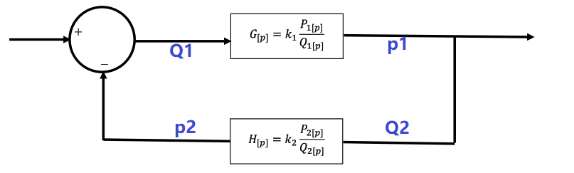
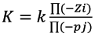
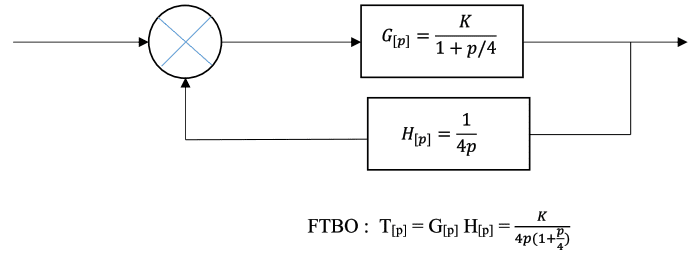
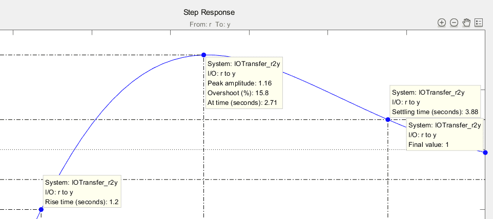
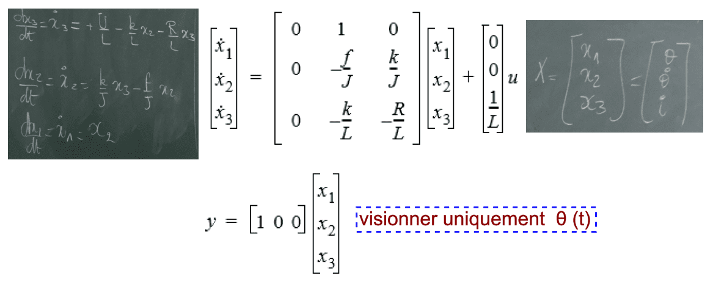
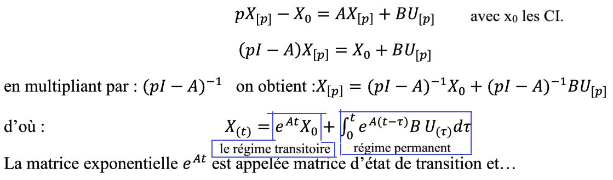
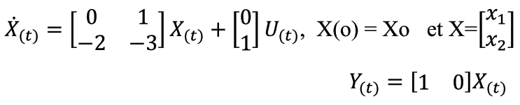
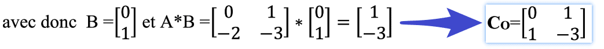
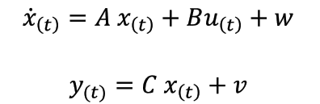

总述
En automatique, un asservissement est un système dont l’objet principal est d’atteindre le plus rapidement possible sa valeur de consigne et de la maintenir, quelles que soient les perturbations externes.
自动控制系统中，伺服系统的目的是，无论有何种外部干扰，都要尽可能快的达到并保持需求信号
Le principe général est de comparer la consigne et l’état du système de manière à le corriger efficacement. On parle également de système commandé par rétroaction négative ou en boucle fermée.
通常的原则是比较输入信号和系统状态来进行高效的纠正。通常又被称为负反馈或者闭环系统。
Matlab 公式
conv (A, B)
roots( )
p=poly(r)
charpoly()
传递函数 num,den
对线性定常系统，s的系数均为常数，且den的常数项不等于0
sys= tf (num, den)
提取分子分母多项式系数的函数tfdata( )。格式：[num,den]=tfdata(sys, ‘v’)
sys传递函数。v功能：返回分子分母多项式系数向量。
siso零极点模型
sys= zpk (z, p, k)
Zero,pole,gain
提取模型零极点增益向量的函数
[z, p, k]=zpkdata(sys, ‘v’)
建立状态空间模型的函数
sys=ss(A,B,C,D)
特征根 传递函数分母的根
微分方程
线性时不变系统（LTI）的模型：
传递函数（Transfer Function）模型TF
零极点增益（ZPK）模型ZPK
状态空间（State Space）模型SS
P33
z，p向量 k标量
模型连接：串联series，并联parallel
求闭环传递函数的MATLAB函数cloop( )和feedback( )
其中cloop( )函数只能用于H(s)=1（即单位反馈）
[numc, denc]=cloop(num, den, sign)
[num, den]=feedback(num1, den1, num2, den2, sign)
num1, den1：G(s) 的分子、分母多项式
num2, den2: H(s)的分子、分母多项式
sign= -1 为负反馈（默认值），sign=1 为正反馈
P44
电感 微分器
电容 积分器
拉普拉斯变换
阶跃响应
step(tf)
grid on
利用simulink的提取线性模型函数 linmod( ), 得到状态空间模型，然后对状态空间模型进行各种仿真。
[A,B,C,D]=linmod(‘samples_4_14’);
[num,den]=ss2tf(A,B,C,D);
printsys(num,den,’s’) %以传递函数形式显示出来
I) Conception des systèmes asservis linéaires par placement des pôles 通过放置极点来设计线性控制系统 1948
1.1 Objectifs de la méthode
当FTBO的Gain从0到正无穷时，求解特征方程的根(pôles de la FTBF)
1.2 Rappel de la relation entre les pôles et les zéros de la FTBF 分别回忆针对FTBO和FTBF零点与极点的关系

F
onction
T
ransfert de
B
oucle
F
ermé :
zero: 分子为零，即
P1=0 or Q2=0
pôle: 分母为零，即 求解特征方程的根
Q1Q2+k1k2P1P2=0
alors，
suivant,
特征方程就可以写成
Q1
Pourquoi
Zi
et
Pj
???
结论
特征方程的根(FTBF的pôle)取决于取决于K的值，该值通过以下方程与FTBO的K相关联。而FTBF的零点不受K的影响

图示
1.3 Lieu d’Evans
由于伺服系统的性能直接取决于
开环系统
的K, 通常通过调试该数值以获取系统的其他指标参数。
当K从0变化到正无穷时，了解FTBF的pôle在复数平面的演变就非常重要。
FTBF的pôle是在空间一系列点，对应K值从小到大的变化。
这些位置就被称为
lieu d’Evans
，或
特征方程根的分布位置
，或
FTBF的极值分布
1.3.1 Conditions définissant le lieu d’Evans
已知FTBO系统的极值Pj和零点Zi，当M点的坐标
p=a+jb
是特征方程
1+T[p]=0
的根。
可以写成：
空间向量满足如下关系：
该条件可翻译如下：
注意
如果不存在零点，则分子为1
该条件可翻译成图像为：
Q2
Z1 ？？？
RLtool de Matlab
1.3.2 exemples a)

解答
该FTBO：
1. 无零点
2. 有两个极值
p1=0 p2=-4
3. 由特征方程
1+T[p]=0
可得多项式
该多项式的零点是FTBF的pôle.
把k的值从0到16每隔4取一个列表如下
3.1 当k=0时，FTBO和BTBF的pôle相同
3.2 当k=4时，实数值和虚数值的交界处，在该点处
ξ的值等于1
验证M的条件：
复平面的性质
不同的质量标准决定了阻尼amortissement：
ξ≥0.5
速度标准定义了这种关系：
ξω≥3/tr5%
图示如下，
1.3.2 exemples b)
Un système à contrôler a comme fonction transfert en boucle ouverte (avec retour
unitaire):
clc clear num=1; %numérateur分子 den=conv([1 0],conv([1 2],[1 5])); %denominateur T=tf(num,den) kesi=0.5; %Coef amortissement omega0mini=1.43; %从rltool图上可知natural frequence (pulsation propre) p1=-kesi*omega0mini+1i*omega0mini*sqrt(1-kesi^2); p2=-kesi*omega0mini-1i*omega0mini*sqrt(1-kesi^2); %rltool
点P3应在M点的左侧
求pôles dominants公式:
验证特征

总结
结论
En règle générale, il est admis que lorsque le module du pôle réel p3 reste supérieur ou égal à 10 fois le module de la partie réelle des racines complexes conjuguées, le troisième ordre est assimilable à un système du deuxième ordre.
当实数极值≥10倍复数极值的实数部分,那么三阶系统与二阶系统相似。
英法对照
| 法 | 英 |
|---|---|
| Temps de réponse à 5%(Tr5%) | setting time |
| Temps de montée | rise time |
| Peak réponse de dépassement | peak ampititude, overshot,at time |
| Erreur de position | final value |
| Coef amortissement | damping raito |
| pulsation propre | natural frequence |
II) Conception des systèmes asservis linéaires par commande par retour d’état 通过状态反馈的线性伺服控制系统
-
fonction de transfertdéfinie lors du cours d’asservissements linéaires continus. -
Le problème est traité dans le
domaine fréquentielet lesconditions initialessontnulles. -
La représentation d’état offre une
description plus complètepuisqu’elle permet de connaitrel'évolution des variables internes du processus -
Il ne lui est pas demandéde contrôler l’intensité du courant électrique(l’autre variable d’état i(t)) pourtant(cependant) responsable d’échauffements susceptibles de réduire notablement la durée de vie de son moteur. (不要求控制电流强度,但是对显著降低电机寿命的可接受发热负有责任)
2.1 Mise sous forme d’état (voir annexe ou cours MC53) 转换成状态空间形式

D
D est la matrice de transmission directe ou matrice de couplage entrées-sorties.Dans de nombreux cas elle est identiquement nulle puisqu’elle représente le cas particuliers des liaisons qui sont la limite du principe de causalité. 通常D为0，因为该矩阵表明特例情况下因果关系的限制关系
2.1.1 Sélection des variables d’état 选择状态变量
-
Il faut d’abord inventorier l’ensemble des grandeurs qui apparaissent
sous forme dérivéedans les équations. Ces grandeurs sont notées γi dont l’ordre maximum est noté ρi. Cette quantité définit le nombre de variables d’état qu’il faut introduire pour représenter une grandeur γi. -
L’ordre du système (linéaire ou non) est égal à la somme des ρi. ρi的数量就是系统阶数
首先要清查所有以微分形式出现的变量γi。同时每个变量其各阶量命名为ρi，该量定义了需要引入来表示某一γi量的状态变量的数量。 - Les entrées sont les variables indépendantes, alors que les sorties sont les grandeurs mesurées.Les grandeurs qui ne sont ni des variables d’état, ni des entrées, ni des sorties, doivent être éliminées par substitution. 输入量是互相独立的变量，输出量是测量量。其余无关量需要用替代法消除。
例题 3阶系统

3阶系统整理可得

2.1.2 Solution mathématique 数学分析
简化为一阶微分

2.1.3 Obtention d’une représentation d’état à partir d’une FT 由转换方程到状态表示
Soit un système considéré représenté par la FT(représentation dite externe) suivante :
于是
remarque
lorsque m = n, alors on procède à une division polynomiale pour obtenir une nouvelle FT, Go[p] ,dont le d°N sera strictement inférieur à d°D. Ensuite on procède comme précédemment en utilisant la nouvelle FT Go[p] :
2.1.4 De la représentation d’état à la FT 状态表示到转换方程
2.2 Notion de Contrôlabilité et d’observabilité 系统的可控性和可观性
-
La commande des systèmes asservis linéaires par commande par retour d’état va consister à
placer les pôles du système en BF à l’endroit désiré sur le plan complexe afin d’atteindre les
objectifs visés de stabilité, de rapidité, de précision…
通过状态方程的线性系统需求控制由在闭环系统的复数平面中放置满足要求的极点来达到稳定快速精确的目的。 -
为此，要求改系统可观可控。引入两个问题：
-
Peut-on, en agissant sur les grandeurs d’entrée du système, faire passer l’état du système X(t) d’un état arbitraire X(to) à un autre état arbitraire X(t1)？vous vous posez donc à travers cette question basique le problème de la contrôlabilité.
可控性：通过改变系统的输入变量，将系统状态从任意一个状态X(t0)变化到另一个任意状态X(t1) -
Peut-on, en observant les grandeurs de sortie Y(t) du système sur un intervalle de temps suffisamment long [t0, t1], déduire l’état initial X(to) du système? avec cette autre question tout aussi basique vous vous posez la problématique de l’observabilité.
客观性：通过观察在足够久的时间间隔内的系统输出，推断系统的输入状态
-
Peut-on, en agissant sur les grandeurs d’entrée du système, faire passer l’état du système X(t) d’un état arbitraire X(to) à un autre état arbitraire X(t1)？vous vous posez donc à travers cette question basique le problème de la contrôlabilité.
2.2.1 Contrôlabilité(ou Commandabilité)系统的可控性(可调性)
-
Kalman 于1960年引入的概念，以确定是否可通过
改变闭环系统的极值pôle来达到设计目标 -
判定条件:Si à l’instant to le système se trouve à l’état initial X(to) = Xo, nous disons que cet état est commandable(ou contrôlable) si nous pouvons trouver un temps t1 fini supérieur à to et une commande U(t) dans l’intervalle de temps [to, t1] qui transfère l’état du système de Xo à X(t1)=X1. Nous disons aussi que le système est complètement commandable s’il est commandable quel que soit l’état initial Xo et l’instant initial to.
- t0时刻系统初始状态 X(t0)=X0, 如果存在t1(t1>t0)时刻使得某个控制量U(t)在[t0,t1]区间内可以把系统从状态Xo转变为X1,那么该系统为可控的。
- 或者说如果该系统无论初始状态Xo或初始时刻是何值都是可控的，那么为完全可控。
- Pour les systèmes linéaires et invariants dans le temps, une condition nécessaire et suffisante de contrôlabilité a été donnée par Kalman et dépend uniquement de la paire (A, B). 对于线性时不变系统来说，kalman定义:可控性的充分必要条件只取决于(A,B). Cette condition se résume à ce que la matrice de commandabilité suivante :
判定可控性的充分必要条件
$C_{o} = [𝑩, 𝑨𝑩 , …, 𝑨^{𝒏−𝟏}𝑩]$ soit de
rang(秩) n
Le paramètre n étant le nombre de variables d’état dans le vecteur d’état X
秩就是矩阵中线性独立横行的数目
举例说明


可控性的判定条件
- rank($C_{o}$)==rank(X)
- det($C_{o}$) ≠ 0
2.2.2 Observabilité 系统的可观性
-
Le concept d’observabilité est en quelque sorte le dual de celui de la commandabilité. En effet, l’observabilité consiste à déduire l’état initial X(t0) du système à partir des observations des grandeurs de sortie du système sur un intervalle de temps suffisamment long [t0, t1].
可观性的对偶概念是可控性。事实上，可观性需要从系统的输出量推断其在足够长的时间间隔上的初始状态。
判定可观性的充分必要条件
$O_{b} = [C; CA; CA^{2}; …; C^{𝒏−𝟏}A]$ soit de
rang(秩) n
Le paramètre n étant le nombre de variables d’état dans le vecteur d’état X (la dimension du vecteur état)
秩就是矩阵中线性独立横行的数目
举例说明
可观性的判定条件
- rank($C_{o}$)==rank(X)
- det($C_{o}$) ≠ 0
可控性可观性总结及matlab程序
- 可控制性是指可以利用输入将系统由初始状态转换成任意的最终状态
- 可观察性是指系统的输出轨迹预测其初始状态
%On explicite les différentes matrices A=[0 1;-2 -3]; B=[0;1]; C=[1 0]; D=[0]; n=rank(A); %On lit la dimension n de notre vecteur d etat %On les exprime sous forme d etat sys=ss(A,B,C,D); %On lance la verification de la controlabilite CO=ctrb(sys); nCO=rank(CO); %On peut creer l interface suivante if rank(CO)==n display('systeme controlable') else; display('systeme non controlable') end %On lance la verification de l observabilite Ob=obsv(sys); nOb=rank(Ob); %On peut encore creer l interface suivante if rank(Ob)==n display('systeme observable') else; display('systeme non observable') end
2.3 Commande par retour d’état
反馈状态控制
- 通过系统的状态来建立控制信号U(t)
- contrôler des systèmes de type MIMO
- 反馈状态控制的前提是假设所有的状态变量都是可以获取的。这种方法的代价是，状态变量越多，需要的传感器数量以及测量次数就变多了，结果就导致测量精度下降。 一个可替代的方案就是只测量较少的状态变量，然后通过状态观测器去推测其余的变量。Cette hypothèse deviendrait évidemment très onéreuse du fait que plus le nombre de variables d’état est élevé, plus le nombre de capteurs nécessaires à leurs mesures augmente. La fiabilité du système diminuant en conséquence. Une alternative à cette contrainte de coût consiste à ne mesurer qu’un nombre réduit de variables d’état et à estimer les autres au moyen d’un observateur d’état.
2.3.1 Présentation
2.3.2 Etude d’un système SISO
A = [0 1;-2 -3] B = [0;1] p = [-1.5+1.5i;-1.5-1.5i]% pôles désirés K = place(A,B,p)
Remarque:
Simulink
Pour le block de K, faut au’on utilise
Matrix(K*u)
2.3.3 Etude d’un système MIMO
A = [1 0 1;0 2 0;0 0 5]; B = [1 0;-1 0;1 1] ; C = [1 0 0;0 1 0] ; %lecture de X1 et X2 D = [0 0;0 0] ; sys=ss(A,B,C,D); Co=ctrb(sys); nCo= rank(Co); p=[-1 -1.5 -1]; K=place(A,B,p); AR=A-B*K Poles = eig(AR) N=1/(c*inv(-A+B*K)*B)
markdown
Netoyer
clear
: workspace
clc
:console
2.3.4 Reconstructeur d’état
2.3.5 Commande par retour d’état avec observateur
Procédure de conception d’un retour d’état avec observateur :
Première étape :
Vérifier la commandabilité et l’observabilité du système
Deuxième étape :
Déterminer la matrice de contre réaction K en prenant des positions de pôles qui vous semblent les plus intéressantes par rapport au cahier des charges.(amortissement et temps de réponse).
Troisième étape :
Déterminer la matrice L en choisissant des pôles dominants dans un rapport de 10 par rapport aux pôles dominant du système.
Quatrième étape :
Construire votre système global comme sur la figure ci-après.
Cinquième étape :
Analyser les résultats et réajuster les placements des pôles si besoin.
2.3.6 Commande par retour d’état avec action intégrale
III) Conception des systèmes asservis linéaires par régulation linéaire quadratique : LQR
5 équations
1 moteur:
2 électromagnétique:
1 mécanique:
1 hydraulique:
clc clear % parametres : R_=1.36; L_=3.6e-3; Ke_=0.838; Ki_=0.838; Ka_=10; b_=0.268; Kv_=0.5; S_=50; J_=1; Ks_=1.34; C1_=(R_*b_+Ke_*Ki_)/(Ki_*Ka_); C2_=(L_*b_+R_*J_)/(Ki_*Ka_); C3_=(L_*J_)/(Ki_*Ka_); A=[0 1 0 0; 0 0 1 0;0 -C1_/C3_ -C2_/C3_ 0; Kv_/S_ 0 0 -Ks_/S_]; B=[0;0;1/C3_;0]; %C=eye(4) C=[0 0 0 1]; D=[0]; sys=ss(A,B,C,D); Co=ctrb(sys); nCo=rank(Co); Ob=obsv(sys); nOb=rank(Ob); P1=[-0.15+0.15i, -0.15-0.15i, -1.5, -1.6]; K=place(A,B,P1) L=place(A.',C.',P1).' %Q=[25 0 0 0 0;0 1 0 0 0;0 0 100 0 0; 0 0 0 1 0; 0 0 0 0 0.01] %rho=5 %R=[rho*(1/(50*50))] %[K,P,E]=lqr(A,B,Q,R)
3.1 Critère d’optimisation quadratique
3.1.1 Présentation
3.1.2 Critère des performances Jx
3.1.3 Critère d’économie énergétique Ju
3.14 Critère d’optimisation quadratique JLQ .
3.2 Solution du problème LQ : équation de Riccati
3.3 Procédure de mise au point.
3.4 Bibliographie utile pour cette partie de cours :
IV)Introduction à la commande Linéaire Quadratique Gaussienne :LQG

4.1 Principe du filtre de Kalman
4.2 Analogie avec le problème de la commande optimale LQ
4.3 Mise en œuvre du filtre de Kalman
4.4 La commande LQG
4.4.1 Le principe de séparation…
4.4.2 Séchage du Kaolin
V) Conception des systèmes asservis intelligents
5.1 Logique floue
5.2 Réseaux de neurones
5.3 Algorithmes génétiques
VI) Simulations numériques
6.1 Software In the Loop :SIL
6.2 Hardware In the Loop :HIL
TD习题
TD01
Ex01
Ex02
Ex03
TD02
Ex01
Ex02
Ex03
num=4; den=[1 3 6 2]; [A,B,C,D]=tf2ss(num,den)
Ex04
A=[0 1;-2 -3]; B=[0;1]; C=[5 1]; D=[0]; [num,den]=ss2tf(A,B,C,D); syms p; I=[1 0;0 1]; A0=(p*I-A); A1=inv(A0)
Ex05
A=[2 0;-1 1]; B=[1;-1]; C=[1 1]; %faut C=[1 0;0 1]; D=[0]; sys=ss(A,B,C,D); Co=ctrb(sys); % matrice de commandabilite nCo=rank(Co) %determinant Ob=obsv(sys) nOb=rank(Ob)
TD03
Ex01 Chariot et Prehenseur
1) Equation de movement
PFD: Principalement fondamental dynamique
$$\sum_{1}^nF_{\vec{p}->p}=m_{p}\vec{a_{p/Ro}}$$
On isole P(géométrie dimension nulle), ensuite (P+C)
A=[0 1 0 0 0;0 0 40 0 10^-3;0 0 0 1 0;0 0 -5 0 -10^-4;0 0 0 0 -1]; B=[0;0;0;0;100]; C=[1 0 10 0 0]; D=[0]; sys=ss(A,B,C,D); [num,den]=ss2tf(A,B,C,D); T=tf(num,den); roots(den); Co=ctrb(sys); RCo= rank(Co); Ob=obsv(sys); ROb=rank(Ob); %Poles dominants -0.2-0.2i -0.2+0.2i P=[-1;-0.999;-1.001;-0.2-0.2i;-0.2+0.2i]; K=place(A,B,P); Ar=A-B*K; eig(Ar)